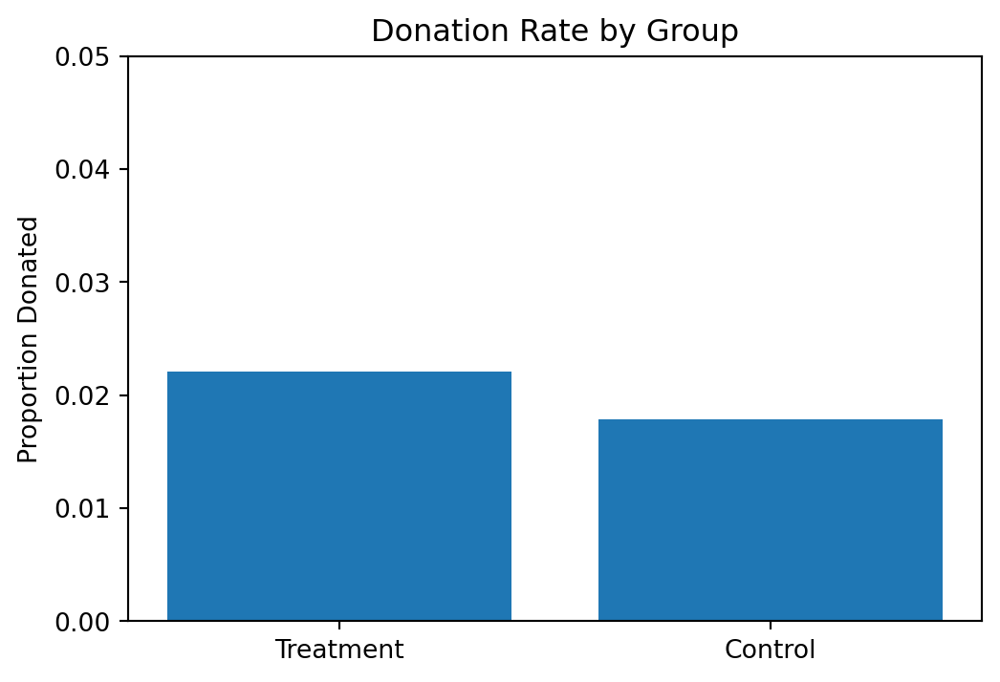
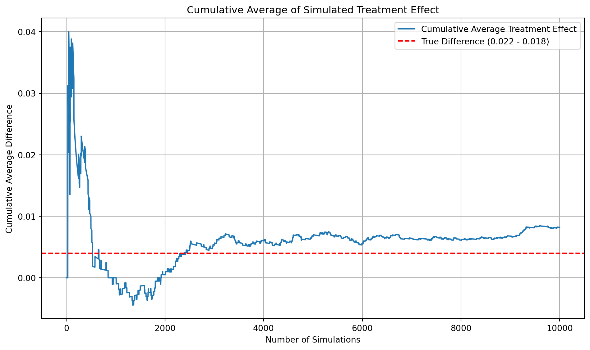
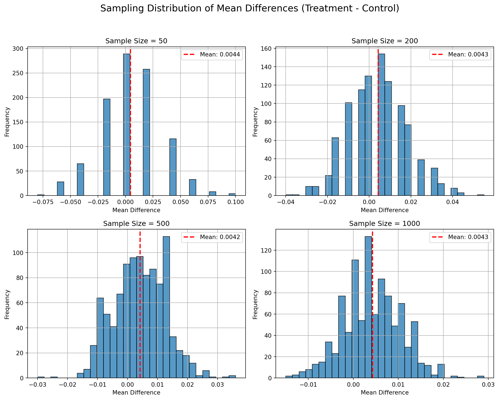

Dean Karlan at Yale and John List at the University of Chicago conducted a field experiment to test the effectiveness of different fundraising letters. They sent out 50,000 fundraising letters to potential donors, randomly assigning each letter to one of three treatments: a standard letter, a matching grant letter, or a challenge grant letter. They published the results of this experiment in the American Economic Review in 2007. The article and supporting data are available from the AEA website and from Innovations for Poverty Action as part of Harvard’s Dataverse.
Published in 2007, this experiment was inspired by America’s significant increase in private charitable giving in the decades prior. It was alluded to the fact that a combination of increased wealth and an aging population in America likely caused this increase. Their analysis originally concluded that the match offer increases both the revenue per solicitation and the response rate. However, larger match ratios (i.e., $3:$1 instead of $1:$1) did not have any additional impact. It was also concluded that the matching had a much larger effect in red states than blue states.
This project seeks to replicate their results.
Data
Description
import pandas as pddf = pd.read_stata('karlan_list_2007.dta')df.head()
treatment
control
ratio
ratio2
ratio3
size
size25
size50
size100
sizeno
...
redcty
bluecty
pwhite
pblack
page18_39
ave_hh_sz
median_hhincome
powner
psch_atlstba
pop_propurban
0
0
1
Control
0
0
Control
0
0
0
0
...
0.0
1.0
0.446493
0.527769
0.317591
2.10
28517.0
0.499807
0.324528
1.0
1
0
1
Control
0
0
Control
0
0
0
0
...
1.0
0.0
NaN
NaN
NaN
NaN
NaN
NaN
NaN
NaN
2
1
0
1
0
0
$100,000
0
0
1
0
...
0.0
1.0
0.935706
0.011948
0.276128
2.48
51175.0
0.721941
0.192668
1.0
3
1
0
1
0
0
Unstated
0
0
0
1
...
1.0
0.0
0.888331
0.010760
0.279412
2.65
79269.0
0.920431
0.412142
1.0
4
1
0
1
0
0
$50,000
0
1
0
0
...
0.0
1.0
0.759014
0.127421
0.442389
1.85
40908.0
0.416072
0.439965
1.0
5 rows × 51 columns
Variable Definitions
Variable
Description
treatment
Treatment
control
Control
ratio
Match ratio
ratio2
2:1 match ratio
ratio3
3:1 match ratio
size
Match threshold
size25
$25,000 match threshold
size50
$50,000 match threshold
size100
$100,000 match threshold
sizeno
Unstated match threshold
ask
Suggested donation amount
askd1
Suggested donation was highest previous contribution
askd2
Suggested donation was 1.25 x highest previous contribution
askd3
Suggested donation was 1.50 x highest previous contribution
ask1
Highest previous contribution (for suggestion)
ask2
1.25 x highest previous contribution (for suggestion)
ask3
1.50 x highest previous contribution (for suggestion)
amount
Dollars given
gave
Gave anything
amountchange
Change in amount given
hpa
Highest previous contribution
ltmedmra
Small prior donor: last gift was less than median $35
freq
Number of prior donations
years
Number of years since initial donation
year5
At least 5 years since initial donation
mrm2
Number of months since last donation
dormant
Already donated in 2005
female
Female
couple
Couple
state50one
State tag: 1 for one observation of each of 50 states; 0 otherwise
nonlit
Nonlitigation
cases
Court cases from state in 2004-5 in which organization was involved
statecnt
Percent of sample from state
stateresponse
Proportion of sample from the state who gave
stateresponset
Proportion of treated sample from the state who gave
stateresponsec
Proportion of control sample from the state who gave
stateresponsetminc
stateresponset - stateresponsec
perbush
State vote share for Bush
close25
State vote share for Bush between 47.5% and 52.5%
red0
Red state
blue0
Blue state
redcty
Red county
bluecty
Blue county
pwhite
Proportion white within zip code
pblack
Proportion black within zip code
page18_39
Proportion age 18-39 within zip code
ave_hh_sz
Average household size within zip code
median_hhincome
Median household income within zip code
powner
Proportion house owner within zip code
psch_atlstba
Proportion who finished college within zip code
pop_propurban
Proportion of population urban within zip code
Balance Test
As an ad hoc test of the randomization mechanism, I provide a series of tests that compare aspects of the treatment and control groups to assess whether they are statistically significantly different from one another.
import numpy as npfrom scipy.stats import tdef t_test_randomization_check(df, column, treat_col='treatment', control_col='control'):""" Performs Welch's t-test to compare treatment and control groups for a given variable. Parameters: - df: pandas DataFrame - column: name of the column to compare (e.g., 'mrm2') - treat_col: name of the treatment indicator column (default: 'treatment') - control_col: name of the control indicator column (default: 'control') """# Extract the groups treat = df[df[treat_col] ==1][column].dropna() control = df[df[control_col] ==1][column].dropna()# Means and standard deviations mean_treat = treat.mean() mean_control = control.mean() std_treat = treat.std(ddof=1) std_control = control.std(ddof=1)# Sample sizes n_treat =len(treat) n_control =len(control)# t-statistic numerator = mean_treat - mean_control denominator = np.sqrt((std_treat**2)/n_treat + (std_control**2)/n_control) t_stat = numerator / denominator# Degrees of freedom (Welch-Satterthwaite) var_treat = std_treat**2/ n_treat var_control = std_control**2/ n_control df_numerator = (var_treat + var_control)**2 df_denominator = (var_treat**2/ (n_treat -1)) + (var_control**2/ (n_control -1)) df_welch = df_numerator / df_denominator# p-value p_value =2* (1- t.cdf(np.abs(t_stat), df=df_welch))# Outputprint(f"\n🧪 T-Test for '{column}': Treatment vs Control")print(f"Treatment mean: {mean_treat:.2f}; Control mean: {mean_control:.2f}")print(f"Treatment std dev: {std_treat:.2f}; Control std dev: {std_control:.2f}")print(f"t-statistic: {t_stat:.4f}")print(f"Degrees of freedom: {df_welch:.2f}")print(f"p-value: {p_value:.4f}")# Decisionif p_value <0.05:print("❗ Reject the null hypothesis: The groups are significantly different.")else:print("✅ Fail to reject the null hypothesis: No significant difference between groups.")t_test_randomization_check(df, 'mrm2')t_test_randomization_check(df, 'female')t_test_randomization_check(df, 'red0')
🧪 T-Test for 'mrm2': Treatment vs Control
Treatment mean: 13.01; Control mean: 13.00
Treatment std dev: 12.09; Control std dev: 12.07
t-statistic: 0.1195
Degrees of freedom: 33394.48
p-value: 0.9049
✅ Fail to reject the null hypothesis: No significant difference between groups.
🧪 T-Test for 'female': Treatment vs Control
Treatment mean: 0.28; Control mean: 0.28
Treatment std dev: 0.45; Control std dev: 0.45
t-statistic: -1.7535
Degrees of freedom: 32450.81
p-value: 0.0795
✅ Fail to reject the null hypothesis: No significant difference between groups.
🧪 T-Test for 'red0': Treatment vs Control
Treatment mean: 0.41; Control mean: 0.40
Treatment std dev: 0.49; Control std dev: 0.49
t-statistic: 1.8773
Degrees of freedom: 33450.52
p-value: 0.0605
✅ Fail to reject the null hypothesis: No significant difference between groups.
The above results confirm randomization of the experiment. There was no significant difference in the treatment and control groups regarding the number of months since last donation, the percentage of male/female participants, or participants in red/blue states, which could have affected the results. Let’s compare results with a linear regression for the months since last donation variable ‘mrm2’ to confirm our approach.
import statsmodels.api as smdf_reg = df[['mrm2', 'treatment']].dropna()#define x and yX = df_reg['treatment']X = sm.add_constant(X)y = df_reg['mrm2']#fit modelmodel = sm.OLS(y,X).fit()#extract valuescoef = model.params['treatment']t_stat = model.tvalues['treatment']p_value = model.pvalues['treatment']print(f"Coefficient (treatment): {coef:.4f}")print(f"t-statistic: {t_stat:.4f}")print(f"p-value: {p_value:.4f}")
The t-statistics and p-values match accordingly, confirming the method.
Table 1 is included in the original report to provide evidence of randomization of the treatment and control groups. This is proven to be true, being that we fail to reject the null hypothesis with no statistically significant difference in demographics for treatment and control groups.
Experimental Results
Charitable Contribution Made
First, I analyze whether matched donations lead to an increased response rate of making a donation.
import matplotlib.pyplot as plt#calculate proportionsprop_treatment = df[df['treatment'] ==1]['gave'].mean()prop_control = df[df['control'] ==1]['gave'].mean()#data for plotgroups = ['Treatment', 'Control']proportions = [prop_treatment, prop_control]#plotplt.figure(figsize=(6,4))plt.bar(groups, proportions)plt.ylabel('Proportion Donated')plt.title('Donation Rate by Group')plt.ylim(0,.05)plt.show()

Based on the bar chart above, it appears that the treatment had a slight effect on donation rates.
While the effect is small, it is statistically significant based on the p-value of less than .05. This implies that people in general provided donations more when told that donations would be matched.
Optimization terminated successfully.
Current function value: 0.100443
Iterations 7
Probit Marginal Effects
=====================================
Dep. Variable: gave
Method: dydx
At: overall
==============================================================================
dy/dx std err z P>|z| [0.025 0.975]
------------------------------------------------------------------------------
treatment 0.0043 0.001 3.104 0.002 0.002 0.007
==============================================================================
The probit regression indicates an increase in probability of donating by 0.43%, holding all else constant, when given the treatment (matching). This is consistent with the linear regression results, as effect is small. P-values also match, and are statistically significant. Treatment has a statistically significant but modest positive effect on probability of donation.
NOTE: Linear regression results appear replicate Table 3 column 1 in the paper. Probit results do not, despite Table 3 indicating its results come from probit regressions…
Differences between Match Rates
Next, I assess the effectiveness of different sizes of matched donations on the response rate.
def t_test_donation_rate(df, ratio_a, ratio_b, outcome_col='gave', ratio_col='ratio'):""" Performs and prints a Welch's t-test comparing donation rates between two match ratio groups. Parameters: - df: pandas DataFrame - ratio_a: first ratio value (e.g., 1, 2, 3, or "Control") - ratio_b: second ratio value - outcome_col: name of the binary outcome column (default: 'gave') - ratio_col: name of the match ratio column (default: 'ratio') Returns: - Dictionary of test results """ group_a = df[df[ratio_col] == ratio_a][outcome_col].dropna() group_b = df[df[ratio_col] == ratio_b][outcome_col].dropna() n1, n2 =len(group_a), len(group_b) p1, p2 = group_a.mean(), group_b.mean()# Standard error se = np.sqrt((p1 * (1- p1)) / n1 + (p2 * (1- p2)) / n2)# t-statistic t_stat = (p2 - p1) / se# Degrees of freedom var1 = (p1 * (1- p1)) / n1 var2 = (p2 * (1- p2)) / n2 df_welch = (var1 + var2)**2/ ((var1**2)/(n1 -1) + (var2**2)/(n2 -1))# Two-tailed p-value p_value =2* (1- t.cdf(np.abs(t_stat), df=df_welch))# Print resultsprint(f"\n🎯 T-Test: {ratio_b}:1 vs {ratio_a}:1 Match Ratio")print("-"*40)print(f"Sample size ({ratio_a}:1): {n1}")print(f"Sample size ({ratio_b}:1): {n2}")print(f"Donation rate ({ratio_a}:1): {p1:.4f}")print(f"Donation rate ({ratio_b}:1): {p2:.4f}")print(f"t-statistic: {t_stat:.4f}")print(f"Degrees of freedom: {df_welch:.2f}")print(f"p-value: {p_value:.4f}")if p_value <0.05:print("✅ Statistically significant at the 5% level.")else:print("❌ Not statistically significant at the 5% level.")t_test_donation_rate(df, 1, 2) # 1:1 vs 2:1t_test_donation_rate(df, 2, 3)t_test_donation_rate(df, 1, 3)
🎯 T-Test: 2:1 vs 1:1 Match Ratio
----------------------------------------
Sample size (1:1): 11133
Sample size (2:1): 11134
Donation rate (1:1): 0.0207
Donation rate (2:1): 0.0226
t-statistic: 0.9651
Degrees of freedom: 22225.08
p-value: 0.3345
❌ Not statistically significant at the 5% level.
🎯 T-Test: 3:1 vs 2:1 Match Ratio
----------------------------------------
Sample size (2:1): 11134
Sample size (3:1): 11129
Donation rate (2:1): 0.0226
Donation rate (3:1): 0.0227
t-statistic: 0.0501
Degrees of freedom: 22260.85
p-value: 0.9600
❌ Not statistically significant at the 5% level.
🎯 T-Test: 3:1 vs 1:1 Match Ratio
----------------------------------------
Sample size (1:1): 11133
Sample size (3:1): 11129
Donation rate (1:1): 0.0207
Donation rate (3:1): 0.0227
t-statistic: 1.0151
Degrees of freedom: 22215.05
p-value: 0.3101
❌ Not statistically significant at the 5% level.
Author suggests that neither the different match thresholds or example amount had a meaningful influence on behavior. Results above suggest the same. Not enough evidence to conclude that the difference in donation rates is statistically significant for different treatment options.
def compare_match_ratios(df, ratio_a, ratio_b, ratio_col='ratio', outcome_col='gave'):""" Compare two match ratios using linear regression on a binary outcome. Parameters: - df: DataFrame with data - ratio_a: first match ratio to compare (e.g., 1 for 1:1) - ratio_b: second match ratio to compare (e.g., 2 for 2:1) - ratio_col: name of the column containing match ratios - outcome_col: name of the binary outcome column Returns: - Dictionary with coefficient and p-value """# Filter to only the two groups being compared df_sub = df[df[ratio_col].isin([ratio_a, ratio_b])].copy()# Create indicator for being in ratio_b group df_sub['is_ratio_b'] = (df_sub[ratio_col] == ratio_b).astype(int)# Run regression X = sm.add_constant(df_sub['is_ratio_b']) y = df_sub[outcome_col] model = sm.OLS(y, X).fit() coef = model.params['is_ratio_b'] p_value = model.pvalues['is_ratio_b']print(f"\n📊 Comparing donation rates: {ratio_b}:1 vs {ratio_a}:1")print(f"Coefficient (diff in donation rate): {coef:.4f}")print(f"p-value: {p_value:.4f}")compare_match_ratios(df, 1, 2) # Compare 2:1 vs 1:1compare_match_ratios(df, 2, 3)compare_match_ratios(df, 1, 3)
📊 Comparing donation rates: 2:1 vs 1:1
Coefficient (diff in donation rate): 0.0019
p-value: 0.3345
📊 Comparing donation rates: 3:1 vs 2:1
Coefficient (diff in donation rate): 0.0001
p-value: 0.9600
📊 Comparing donation rates: 3:1 vs 1:1
Coefficient (diff in donation rate): 0.0020
p-value: 0.3101
The regression results above indicate the same. The differences between donation rates of the different match ratios are not statistically significant, and therefore do not indicate any effect.
# Response (donation) ratesp_1 = df[df['ratio'] ==1]['gave'].mean()p_2 = df[df['ratio'] ==2]['gave'].mean()p_3 = df[df['ratio'] ==3]['gave'].mean()# Differences in raw proportionsdiff_2v1 = p_2 - p_1diff_3v2 = p_3 - p_2diff_3v1 = p_3 - p_1print(f"Direct from data:")print(f"2:1 vs 1:1: {diff_2v1:.4f}")print(f"3:1 vs 2:1: {diff_3v2:.4f}")print(f"3:1 vs 1:1: {diff_3v1:.4f}")
Direct from data:
2:1 vs 1:1: 0.0019
3:1 vs 2:1: 0.0001
3:1 vs 1:1: 0.0020
Results from data match the regression coefficients. We can safely conclude that there is no effect that match ratios have on donation rates.
Size of Charitable Contribution
In this subsection, I analyze the effect of the size of matched donation on the size of the charitable contribution.
todo: Calculate a t-test or run a bivariate linear regression of the donation amount on the treatment status. What do we learn from doing this analysis?
Treatment effect (difference in donation amount): 0.1536
p-value: 0.0628
While the results from the regression analysis above indicate an increase of 0.15 in the donation amount when given the treatment letter, the p-value is not statistically significant at the 95% confidence level. However, the difference calculated is accurate compared to Table2A of original analysis.
Treatment effect among donors: -1.67
p-value: 0.5615
While the results of the above regression, only considering those who actually donated to begin with, indicate a small decrease in the donation amount, this amount is not statistically significant. Therefore, we cannot conclude that the treatment letters (those with the match ratios) have any significant causal effect on the actual donation amount.
The two histograms above indicate a similar average and similar distribution of donation amounts among those who donated to begin with.
Simulation Experiment
As a reminder of how the t-statistic “works,” in this section I use simulation to demonstrate the Law of Large Numbers and the Central Limit Theorem.
Suppose the true distribution of respondents who do not get a charitable donation match is Bernoulli with probability p=0.018 that a donation is made.
Further suppose that the true distribution of respondents who do get a charitable donation match of any size is Bernoulli with probability p=0.022 that a donation is made.
Law of Large Numbers
# Set random seed for reproducibilitynp.random.seed(42)# Step 1: Simulate 10k Bernoulli draws for each groupn_draws =10000control_draws = np.random.binomial(1, 0.018, size=n_draws)treatment_draws = np.random.binomial(1, 0.022, size=n_draws)# Step 2: Compute the vector of differencesdiffs = treatment_draws - control_draws # element-wise difference# Step 3: Compute cumulative average of the differencescumulative_avg = np.cumsum(diffs) / np.arange(1, n_draws +1)# Step 4: Plot cumulative averageplt.figure(figsize=(10, 6))plt.plot(cumulative_avg, label='Cumulative Average Treatment Effect')plt.axhline(y=0.004, color='red', linestyle='--', label='True Difference (0.022 - 0.018)')plt.title('Cumulative Average of Simulated Treatment Effect')plt.xlabel('Number of Simulations')plt.ylabel('Cumulative Average Difference')plt.legend()plt.grid(True)plt.tight_layout()plt.show()

Accordingly, in the simulation above, the cumulative average eventually converges towards the true difference of 0.004. As the sample size of the random simulation gets larger, the average eventually converges to the true average.
Central Limit Theorem
# Set seednp.random.seed(42)# Parametersp_control =0.018p_treatment =0.022n_simulations =1000sample_sizes = [50, 200, 500, 1000]# Create subplotsfig, axes = plt.subplots(2, 2, figsize=(12, 10))axes = axes.flatten()for i, n inenumerate(sample_sizes): mean_diffs = []for _ inrange(n_simulations):# Sample from each distribution control_sample = np.random.binomial(1, p_control, size=n) treatment_sample = np.random.binomial(1, p_treatment, size=n)# Calculate mean difference diff = treatment_sample.mean() - control_sample.mean() mean_diffs.append(diff)# Plot histogram axes[i].hist(mean_diffs, bins=30, edgecolor='black', alpha=0.75) axes[i].axvline(np.mean(mean_diffs), color='red', linestyle='--', linewidth=2, label=f'Mean: {np.mean(mean_diffs):.4f}') axes[i].set_title(f'Sample Size = {n}') axes[i].set_xlabel('Mean Difference') axes[i].set_ylabel('Frequency') axes[i].legend() axes[i].grid(True)# Final layoutplt.suptitle('Sampling Distribution of Mean Differences (Treatment - Control)', fontsize=16)plt.tight_layout(rect=[0, 0.03, 1, 0.95])plt.show()

When running a simulation experiment, the sampling distribution takes on a bell-shape very quickly, even at sample size of 50, but gets smoothed out by the time sample size is 1000. Central Limit Theorem takes place earlier in the sequence than anticipated, approximating a normal distribution, but more filled in and smooth by 1000 sample size.